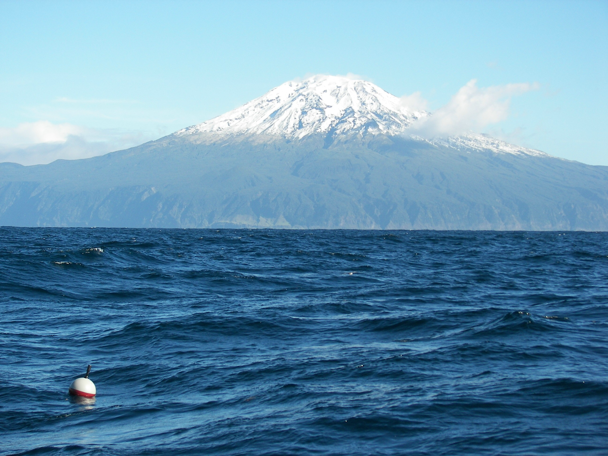

By now you’ve probably heard that the United Nations (UN) has proclaimed a Decade of Ocean Science for Sustainable Development which will take place from 2021 to 2030. More broadly, this is one of the actions put in place by the UN to achieve The Sustainable Development Goals, and more specifically Goal 14 to Conserve and sustainably use the oceans, seas and marine resources.
Anyway, the slogan for this decade is “The Science We Need For the Ocean We Want”. I don’t think this rolls easily on the tongue, but I think it means that it will be up to us to decide what we want to do as scientists to fulfill the Ocean Decade Challenges (perhaps). As the decade is an international activity, it is not a funding program but rather a framework to work together to create new ideas and solutions. One of the ways this will be achieved is by the Decade endorsing specific Decade Actions for which there is a call, closing on 15 January 2021.
This decade has been in preparation since 2017 thanks to the work of The Intergovernmental Oceanographic Commission (IOC) of UNESCO, the United Nations Educational, Scientific, and Cultural organization. IOC has produced an Implementation Plan for the Decade, now in its version 2.0 (took me a while to find the link). This plan lists 7 Outcomes (that’s the ocean we want), and as a physical oceanographer, I guess I am interested in Outcome #4 (A predicted ocean where society understands and can respond to changing ocean conditions) and Outcome #6 (An accessible ocean with open and equitable access to data, information and technology and innovation). But before we get to the outcomes of the Decade we will have to “fulfill” 10 Challenges, such as Challenge #5 which is to enhance understanding of the ocean-climate nexus and generate knowledge and solutions to [do a lot of stuff] , and Challenge #7 to Ensure a sustainable ocean observing system across all ocean basins that delivers accessible, timely, and actionable data and information to all users. Ambitious stuff. Then, there are also 3 Objectives, each of them with 5 to 7 Sub-Objectives and there I am starting to be a bit confused about the purpose of these … I am reading that they are to guide the development and delivery of Actions towards the fulfilment of the Decade Challenges …
If you are still reading this, and you are based in the USA, you should perhaps know that the National Academies of Sciences, Engineering, and Medicine (NASEM) will serve as the organizational center for coordination of scientific initiatives to inspire U.S. contributions to the Decade (note that the Academies are private, nonprofit organizations, so not governmental and thus non partisan). Notably, NASEM has established a US National Committee to convene activities related to the Decade. As such, the US Committee has issued a call for submission of “Ocean-Shots”. As a non-native English speaker working in the US, I really had no idea what that referred to. Then I heard it is related to the concept of Moonshot, which according to urbandictionary.com is awesome, fantastic, almost impossible to achieve, the best, the reason for success, reaching the highest point, right on target … Note that I am not quite sure how this Ocean-Shot application or concept will fit into the call for Decade actions and the Decade endorsement.
In any case, with the support of Rick Lumpkin from NOAA/AOML, Luca Centurioni from Scripps Institution of Oceanography, and Josh Willis from NASA/JPL, I have submitted an Ocean-Shot application to NASEM about the idea/concept of implementing a new global ocean observing system for mean sea level, based on my latest paper published in AGU GRL [1] and featured in AGU’s EOS as a Research Spotlight. This is kind of a crazy idea, and realizing this idea will require national and international collaborations … and help. So I thought it would be a good idea to put it out there in the open, for the sake of #openscience, and I hope to gather ideas, suggestions, and criticisms. Let me know what you think by email selipot@miami.edu, twitter, or use Disqus below to post your comments.

“Ocean-Shot Concept”: Measuring Global Mean Sea Level Changes With Surface Drifting Buoys
1. Abstract (describe hypothesis, scientific and/or technological objectives, 200 words limit)
We propose to establish a new ocean observing system for monitoring global and regional mean sea level changes. This system will consist of a global array of thousands of water following drifting buoys tracked by a global navigation satellite system—such as the Global Positioning System (GPS)—which will continuously provide the geographical positions and the height of the sea surface along the buoys’ trajectories. The sea level height data collected in this way, averaged over regional basins and the global ocean, will provide daily measures of regional and global mean levels. An essential climate variable, mean sea level is an intrinsic measure of climate change, integrating the thermal expansion of the ocean’s waters and additions to the ocean’s mass from melting terrestrial ice. The realization of this new system requires that standardized vertical position measurements with controlled accuracy be acquired and regularly transmitted from relatively small and expendable drifting buoys, which constitutes a technological challenge, yet one with a clear path for being met. The development and implementation of this ocean shot concept will ultimately provide an independent, resilient, sustainable, and economical observational system to quantify natural and anthropogenic sea level changes, augmenting the existing satellites and tide gauge observing systems.
2. Relevant Ocean Decade Challenge(s):
This ocean shot concept is related to Challenge 5 since it contributes to the understanding of climate dynamics by measuring mean sea level; to Challenge 6 since it provides a near-real time monitoring of regional and global mean sea level; to Challenge 7 since it consists of a global ocean observing system delivering free and immediately accessible data to all potential users; and to Challenge 8 since it delivers its data in near-real time to reveal a dynamic monitoring of regional and global mean sea level.
3. Vision and potential transformative impact (200 word limit):
Currently, global mean and regional sea level changes are monitored by two observational systems: coastal and island tidal gauges and satellite radar altimeters. Tidal gauge records have high temporal resolution, but their representativeness of the global mean sea level is biased toward the coasts and the Northern Hemisphere. In contrast, the altimeter reference record is almost global but can only provide a near-synoptic view about every 10 days and spatial resolution of hundreds of kilometers. The envisaged observing system will be high frequency, such as daily, and it will be global by notably including the highest latitudes such as in the Arctic ocean. The new system will be independent of the other systems, but also resilient and scalable, fit-for-purpose and economical, rapidly deployable and adaptable to new technologies and scientific objectives related to understanding and adapting to the threat of the sea level rise and climate change. Importantly, the new system will introduce an important redundancy that would preserve the continuity of the record in case of failure of key satellite missions.
4. Realizable, with connections to existing U.S. scientific infrastructure, technology development, and public-private partnerships (150 word limit):*
A global network of drifting buoys already exists in the form of the Global Drifter Program (GDP), the principal component of the international Data Buoy Cooperation Panel. The GDP is sustained by US federal agencies, with engagements from other countries. The proposed observing system could be quickly deployed by enhancing the positioning technology of GDP drifters, adding to its scientific value and expanding its existing objectives by adding the capability to measure mean sea level. The GDP buoys already use GPS technology to measure surface currents together with sea surface temperature, atmospheric pressure and, and for some, salinity, providing an oceanographic context to new sea level measurements. Importantly, the GDP readily provides the framework for technological development by Scripps Institution of Oceanography and other commercial companies already building drifters, and the logistical infrastructure for deployment and data processing by the Atlantic Oceanographic and Meteorological Laboratory.
5. Scientific/technological sectors engaged outside of traditional ocean sciences (100 word limit):
A recent study (Elipot, 2020, doi:10.1029/2020GL091078), demonstrate that, with the current characteristics of the existing GDP array of 1250 drifters, global mean sea level decadal linear trend estimates with an uncertainty less than the recommended 0.3 mm per year could be achieved with daily random error of 1.6 m or less in the vertical direction for each individual drifter daily estimate. With a pilot project currently underway, this technological challenge will be overcome by combining research and development in global navigation satellite system science, signal processing, and geodesy.
6. Opportunities for international participation and collaboration (100 word limit):
The accuracy of measuring global mean sea level change from an array of drifting buoys improves not only with the individual vertical accuracy of a drifter height measurement, but also with the number of active drifters (Elipot, 2020). Just like the current GDP relies on international collaborations for buoy deployments in the world’s ocean, the proposed array will also need international participation for its implementation and funding. As such, the ultimate scale of the proposed observing system constitutes a clear example of the application of slogan “the science we need for the ocean we want”.
7. Builds global capacity and encourages the development of the next generation of ocean scientists (100 word limit):
Globally distributed deployments of buoys by international partners, and the associated stream of oceanographic data, provide opportunities for personal, institutional, and community engagements. As an example, sea level and other data from a single buoy could relatively easily be apprehended by a single investigator or student. Such individual engagement could ignite further investigations which would include a large number of drifters requiring wider coordination and expertise through a multi-people project, building into the global capacity of the proposed system.
References
comments powered by Disqus